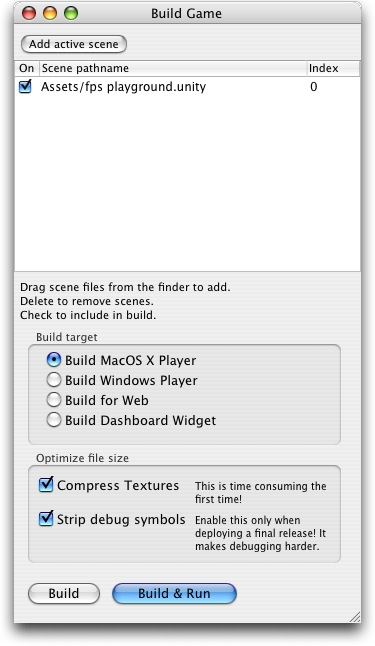

The happiest man is he who best understands the art of finding happiness without letting it encroach upon his duties.
– Giacomo Casanova (1725-1798), voicing an early version of the later-famous game design maxim of finding a balance between frustration and reward.
To start, click the Unity icon in your Applications/Unity folder.
When it launches, Unity will look like this - If it looks overwhelming, don't worry! What you now see is most of the application, so after going through this introduction it will all make sense.
|
The window contains the following main areas:
 |
The toolbar is divided into 3 areas, the Tool List, Tool options and the Layout mode. The tools are your main way of working with your scenes. The options for the currently selected tool is show immediately to the right of this.
On the right side of the toolbar, there is the layout dropdown. Unity allows you to configure the GUI as you see fit. Use this dropdown to store and switch between GUI setups.
 |
The largest area of screen is taken up by the Scene View. This is you view your game world. It is here you position objects and build your world.
 |
The tall view on the right of the screen is the Inspector. This shows you the settings for any objects you have selected. This is where you set up the functionality of the placed objects.
 |
This view lists all the objects in the current scene. It is used to select and group objects.
 |
The Project is where you store all the source files that make up your game (Textures, 3D models, sounds, etc...).
 |
At the bottom of the screen are the control buttons and the status bar.
With the control buttons you can test your game. While it is playing you can still move things around, change settings, and add or remove objects. When you exit play-mode, however, all those changes are lost.
As you move your mouse over the various settings, buttons and menus in Unity, short descriptions will appear in the status bar. As you go through this tutorial, look here whenever you're wondering what something does. Sometimes you'll see red text here as well. Those are error messages. Click them to pop up a window with all current errors.
Without further ado, lets make a game!
To get you started quickly we opened a playground scene. In the scene view you see big lawn with toys on it. There are also a nice lighting setup to give a bit of life to the scene.
Let's take a loot around:
If you're working from a laptop, there is an alternative way of moving your view:
In the toolbar, make sure the leftmost, View tool is activated, by clicking on it with the mouse or hitting Q.
 |
When this tool is selected, you can navigate using the left mouse button only.
HINT: No matter which tool is selected, ALT-drag will always orbit the view.
Select an object in the hierarchy or click on it in the scene view.
Hover the cursor over the scene view and hit f. The scene view camera is now centered on the selected object and you can easily orbit around it. This is essential to navigating 3D space.
Now, lets try moving stuff around... In the toolbar, activate the Move Tool, by clicking on the second button or pressing W.
 |
When this tool is active, you can select an object in the scene by clicking on it. Do this on one of the topmost boxes. When you select an object, manipulation handles appear:
 |
To center the scene view on the box, make sure the mouse is over the scene view and hit F.
The Move Tool has 4 handles: the 3 arrows and the square in the center. To move the object along any of its axes, drag the arrows. To move it freely, drag the square in the center.
Now try placing a few boxes in the air, so instead of being nicely stacked they will fall down when we play. You might end up with something looking like this:
 |
Just so you can see that there was no behind-the-scenes magic going with the world we made, lets extend it a bit by placing a light over the doorway.
 |
Now, we have some nice bananas places in the scene. Try to move them above the boxes - like this:
 |
HINT: If you want to see the scene in a full-screen view, make sure the mouse is over the Scene View and hit Space. This hides any other views (while still leaving the toolbars), allowing you to see what you're doing when you need to place stuff precisely. To get back to the normal view, simply hit Space again.
Once you've done that we're nearly there.
Activate the Rotate Tool by clicking the 3rd button in the toolbar or hitting E. If you look at the object, you will see that the manipulation handles have changed shape to show that you are now rotating the object. Like the Move Tool, you have handles in the object's 3 primary directions. Drag along any of these to rotate the object around that axis, or use the center handle to rotate the object freely...
Try out the game. Press the play button in the lower left of the window:
 |
After pressing it, the game should play. The boxes fall down, and the very heavy bananas plunge through and topple over the rubbery light boxes.
This is a small first person shooter. You can play it using the mouse and the arrow or WASD keys. When you're done, simply press the Play button again to stop.
Positioning objects in a scene is nice and well, but you need to edit the details of them in order to make them fun.
In order to do this, you use the Inspector. The Inspector shows the currently selected object and displays the settings for that object in detail. This is the place where you fine tune the appearance and add functionality to any objecs you have in the scene.
 |
The entities of a Unity game are called GameObjects, or a GO for short. A GO is little more than a position and container for components. Components and are what sets your games alive with action. Components frequently cooperate as in the collision components telling the other physics components when they hit stuff.
There are many types of components, and they are added to your game objects with the Component menu:
 |
There are lots of them, so don't try to add them all at once!
Zoom out the scene view and enable in-game lighting by pressing the light icon in the toolbar at the top of the scene view:
 |
Select the light in the top-left corner of the screen. The Inspector changes to show the settings for this object.
Click on the color of the light and change it a bit around. Notice how the scene view changes mood as you change the lighting.
 |
Above the light settings there is a small question mark. Click this to get on-line help for this component. Use this to learn about the Unity features at your own pace.
To round off this little tutorial, let's make this first-person shooter into a standalone game!
First, save your scene by hitting Command-S, then select File -> Build Game from the main menu. The Build Game dialog comes up.
|  |
At the top of this window, there is the list of scenes in your game. Below that there is the deployment targets. Let's be a stand-alone player. Select it from the list and hit Build at the bottom of the window...
Choose somewhere to save it. Once Unity is done, it will open a finder window, from which you can launch your first game!
Depends on what you want to do, really
No matter what, you must go to our forums. This is the place to hang out and share your works with the rest of us!
Make us proud.
The OverTheEdge team.